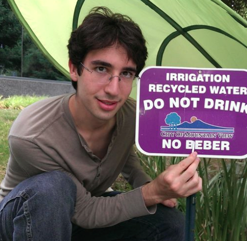

Originally posted at life.khanacademy.org
We’ll dive straight into the questions for our latest Khan Academy Khanversation, this time featuring rising Princeton senior David Bieber.
David, let’s begin with the question everyone is dying to hear you answer. Are you related to Justin Bieber?
It’s funny you should ask that. People tell me all the time “sorry about your last name” or “I hope you’re not related to that singer” or “can you get me free tickets to the Bieber concert?” And because of that, I’ve started feeling a real connection to the guy. I root for his success. I feel down when people trash his music. I think we could become genuinely good friends if we weren’t both vying for the top spot on Google for the search term “Bieber.”
And no, I don’t listen to his music (much).

So, Bieber, how did you come to work at Khan Academy?
Sounds like life story time.
I had some pretty incredible teachers growing up. Lots of them. And not just the grown-up kind – the peer kind too. Throughout middle and high school I was involved in this fantastic math community, the Albany Area Math Circle. We practiced loads of competition math, and most of what I learned, I learned from other students. Some a few years older than me, some a few years younger.
Here I got involved in coaching MathCounts, and I quickly realized that I love teaching. I ran a math camp for middle school students one summer and I had a blast doing it. Whatever I was going to do with my life, it was going to involve teaching in some capacity.
Fast forward a couple years, and I’m sitting in a dining hall in some castle in Princeton. I’m talking with some friends about startup ideas – I have a lot of friends interested in entrepreneurship – and I have a brilliant idea for a company. (I love getting lost in the excitement of a good idea.) “We’ll take classes, and we’ll put them online. Just Princeton classes to start – it’ll be like MIT’s OpenCourseWare – but we’ll make it scalable. And any student with their professor’s permission will be able to really easily get their classes’ lectures online.” Sounds a bit like Coursera. Or YouTube. From there on out, I gave a lot of thought to teaching at scale.
Which brings us to Khan Academy. I’m interested in programming and technology and education, and I’m all for making the world a better place. What better way than the KA way to leverage my interests to facilitate teaching at scale?
Wait… You said you were sitting in a castle?
Yeah, half the buildings on campus are castles. But that’s not the best thing about Princeton. The best thing about Princeton is Code@Night (though I’m biased – I organize them). Every two to three weeks there’s a Code@Night where people gather in this beautiful non-castle building called Sherrerd to code at night. Usually a student or professor or an engineer from a sponsor company will give a tech talk or a demo. People will code all night, they’ll play PacMan and eat pizza. Sometimes they’ll write poetry. It’s really an incredible experience. There are even whiteboards all along the walls making it an ideal environment for puzzles.
Do you have a puzzle you could share with us?
Sure. Here’s one that was going around the KA office recently.
There are one hundred prisoners in a prison, and the warden is a bit too much of a puzzle enthusiast. She finds an empty jail cell, and into it puts one hundred boxes. Under each box she puts the name of one of the prisoners, so every prisoner’s name appears under precisely one box.
Then she tells the prisoners this:
Each one of you will be led individually into the jail cell with one hundred boxes. Under one of these boxes is your name. You will each be allowed to look under 50 boxes, but if even one of you doesn’t find your own name, all one hundred of you will be locked away forever. That said, if all of you find your own name then you will be freed immediately.
The prisoners are terrified, but also excited. They love puzzles too. Help them form a strategy to maximize the chance that they’ll be granted their freedom.
Some caveats: Once the prisoners start going into the cell with the boxes, no communication between the prisoners is allowed. And the prisoners cannot make any modifications to the room with the boxes either – no leaving boxes turned over, no writing on the walls, and no taking boxes out of the room or moving them, even the one with your name under it.
Good luck.
Sounds tough. What’s the answer?
Pshhh, don’t give up yet. It’s a really good puzzle. Who’s asking these questions, anyway?
That’d be me. David Bieber.
So what you’re telling me is that I’m involved in a virtual interview… with myself?
Yeah.
And to think I thought the Turing test was hard… why are you writing all this anyway?
Well, it’s good to take a break from coding every now and again. Plus, I really like having people read the things I write – I found this out after starting my blog a year ago (take a look!) – it makes the writing process a lot more fun. It also gives you all a better feel for life at Khan Academy, and that transparency is really valuable. We’re real people who make KA run! Seeing all the awesome stuff on this blog is part of why I came to work here. But most of all, the writing really is fun! Especially the Bieber bit – I had a good time writing that. And no, we’re not related.